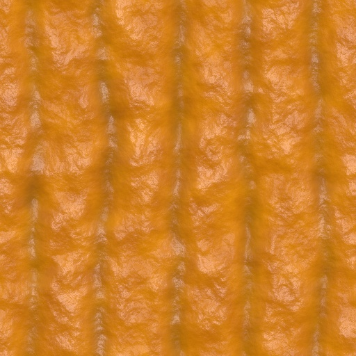
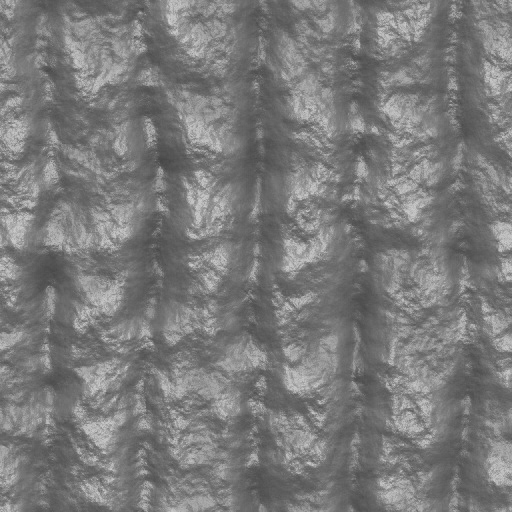
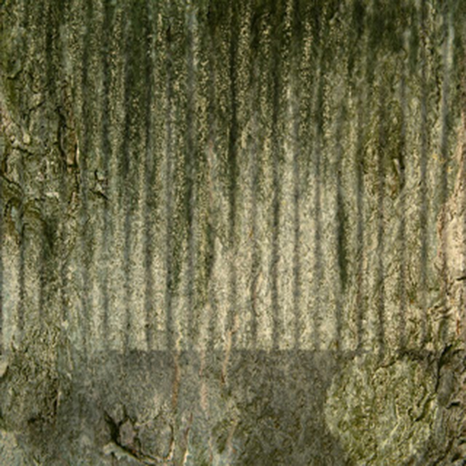
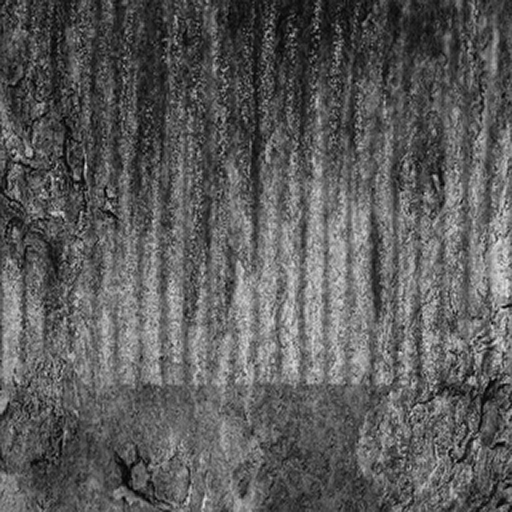
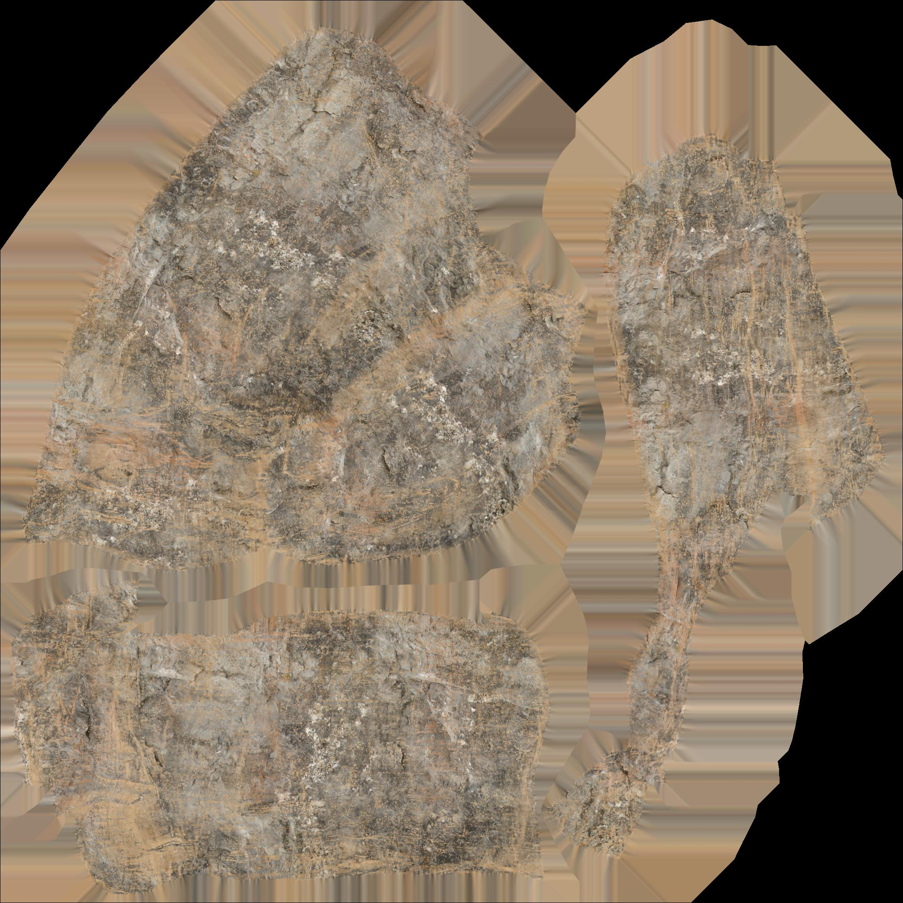
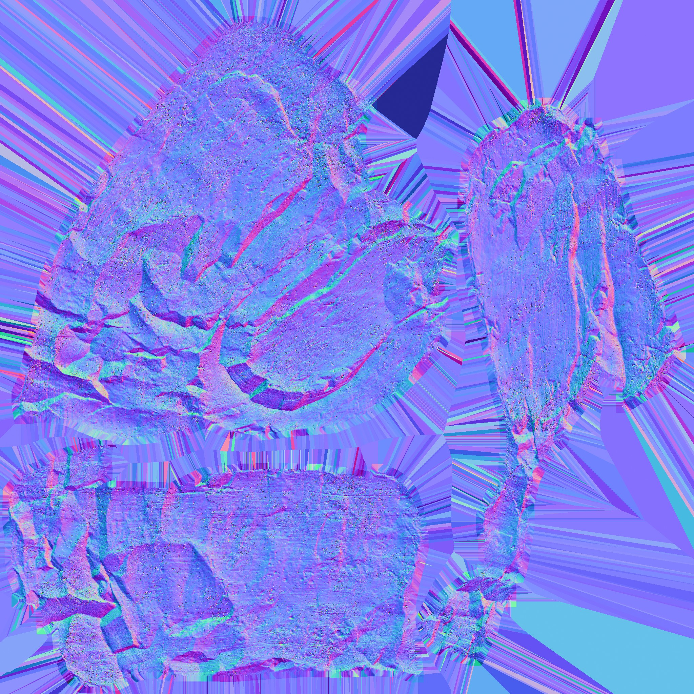
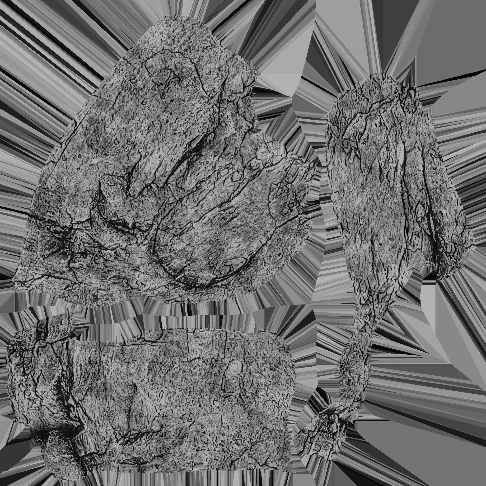
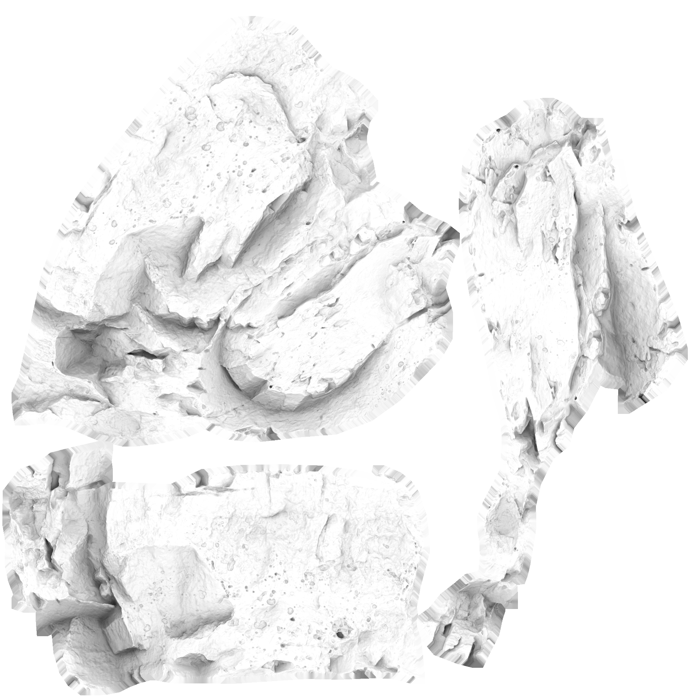
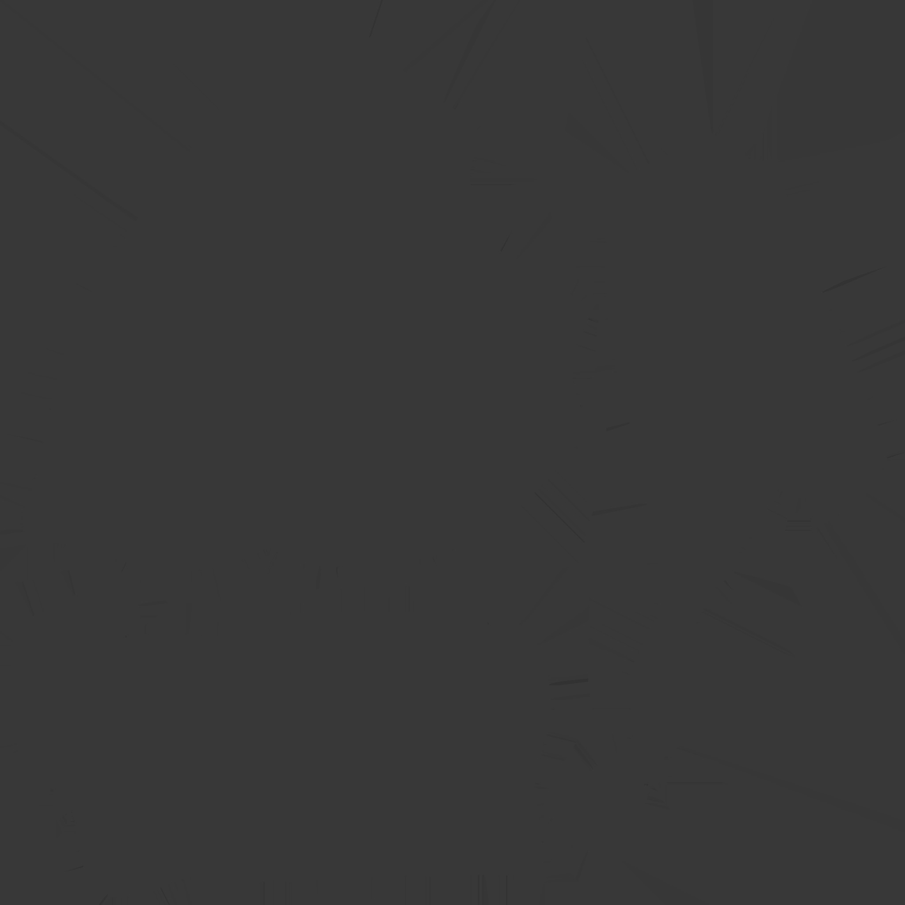

CS-537 Final Project
Jordan Handwerger
Jack Brummer
Tyler Sulsenti
Oops ... your browser doesn't support the HTML5 canvas element
This wil display the list of objects and the customization elements.
   
    